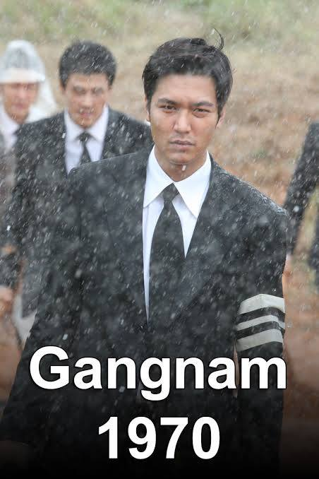

| Full Name | Lee Min Ho |
|---|---|
| Date of Birth | June 22, 1987 |
| Birth Place | Seoul, South Korea |
| Height | 6'2" |
| Occupations | Actor . singer |
| Agent | MYM Entertainment |
| Website | Le Min Ho | ">
Lee Min-ho is a famous South Korean actor, model, and singer, best known for his roles in popular Korean dramas such as Boys Over Flowers, The Heirs, The Legend of the Blue Sea, The King: Eternal Monarch, and Pachinko. He was born on June 22, 1987, in Seoul, South Korea. He is admired for his handsome appearance, charming smile, tall height, and outstanding acting skills. With his natural charisma and impressive performances, he has become one of the most beloved Korean actors worldwide. Lee Min-ho is also known for his kindness, humble personality, and dedication to his career. He continues to inspire millions of fans around the world with his talent, hard work, and unforgettable roles.
Lee Min-ho is a South Korean actor, model, and singer who began his acting career in 2002. He gained worldwide recognition for playing Gu Jun-pyo in the hit drama Boys Over Flowers (2009). He later starred in several successful Korean dramas, including City Hunter, The Heirs, The Legend of the Blue Sea, The King: Eternal Monarch, and Pachinko. Throughout his career, he has received numerous awards and built a strong international fan base. He has also worked as a brand ambassador for several luxury and global brands. With his talent, dedication, and charisma, Lee Min-ho has established himself as one of South Korea's most influential and internationally recognized actors.
| Year | Title | Director | Co-stars | Role |
|---|---|---|---|---|
| 2015 | Gangnam Blues | Yoo Ha | Kim Rae-won, Jung Jin-young, Kim Seol-hyun | Kim Jong-dae |
| 2016 | Bounty Hunters | Shin Terra (Shin Tae-ra) | Wallace Chung, Tiffany Tang, Karena Ng, Jeremy Xu | Yi San (Lee San) |
| 2009 | Boys Over Flowers | Jeon Ki-sang | Lee Min-ho, Koo Hye-sun, Kim Hyun-joong, Kim Bum နဲ့ Kim Joon | Gu Jun-pyo |
|
 |
<